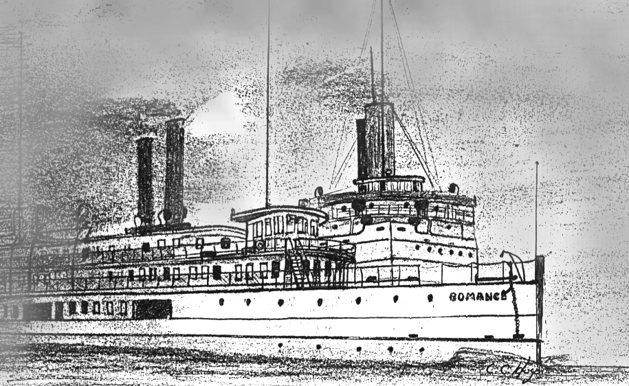

Romance
The Romance was a 245 ft foot long, steel hulled, passenger steamer. She was lost September 9, 1936, in the approaches to Boston Harbor, in collision with the out bound steamer New York.

Click on image to go back to Romance page.
Copyright © 2000 by Christopher C. Hugo
Massachusetts Board of Underwater Archaeological Resources
All Rights Reserved
Go to Shipwrecks page
Go to MWDC home page